.png)
17 Sustainable Development Goals (SDGs) are the world’s best plan to build a better world for people and our planet by 2030.
Adopted by all United Nations Member States in 2015, the SDGs are a call for action by all countries – poor, rich and
middle-income– to promote prosperity while protecting the environment. They recognize that ending poverty must go hand-in-hand with strategies that build economic growth and address a range of social needs including education, health, equality and job opportunities while
tackling climate change and working to preserve our ocean and forests.
The SDGs are INTEGRATED—that is, they recognize that action in one area will affect
outcomes in others, and that development must balance social, economic and environmental sustainability. Through the pledge to Leave No
One Behind, countries have committed to fast-track progress for those furthest behind first.
That is why the SDGs are designed to bring the world to several life-changing ‘zeros’, including zero poverty, hunger, AIDS and discrimination
against women and girls.


 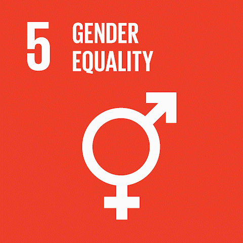
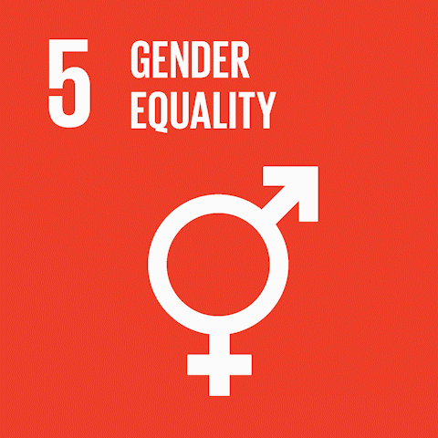
 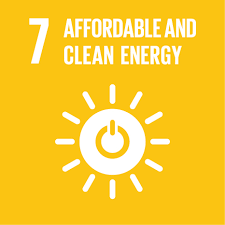
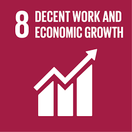
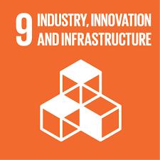
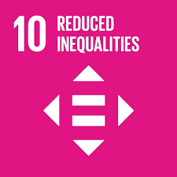
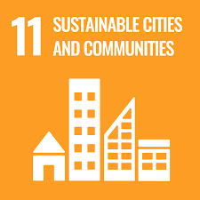
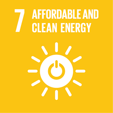
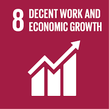
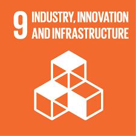
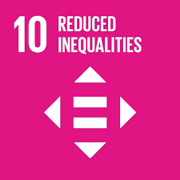
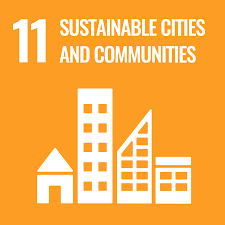

 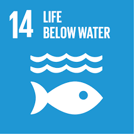
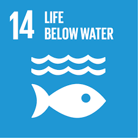
 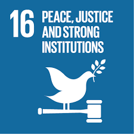
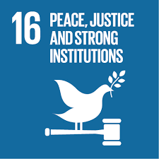
 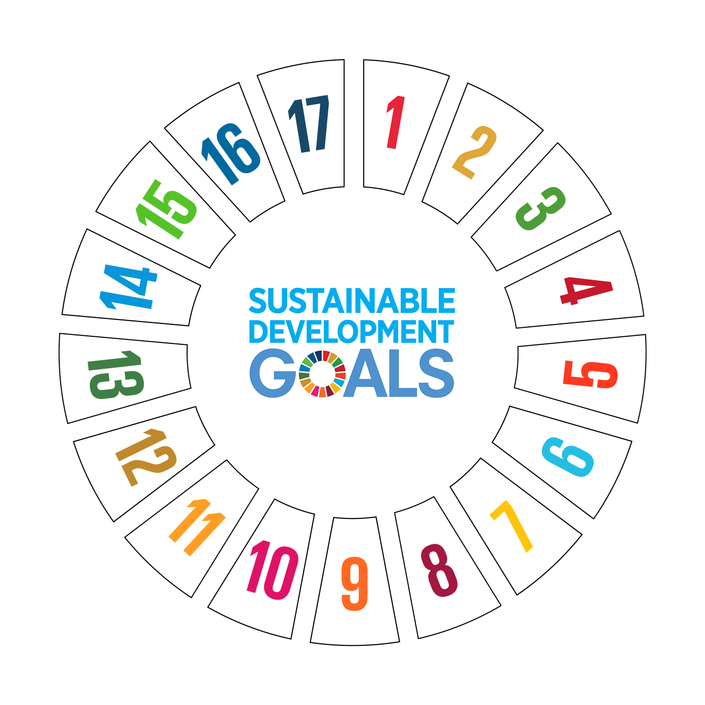
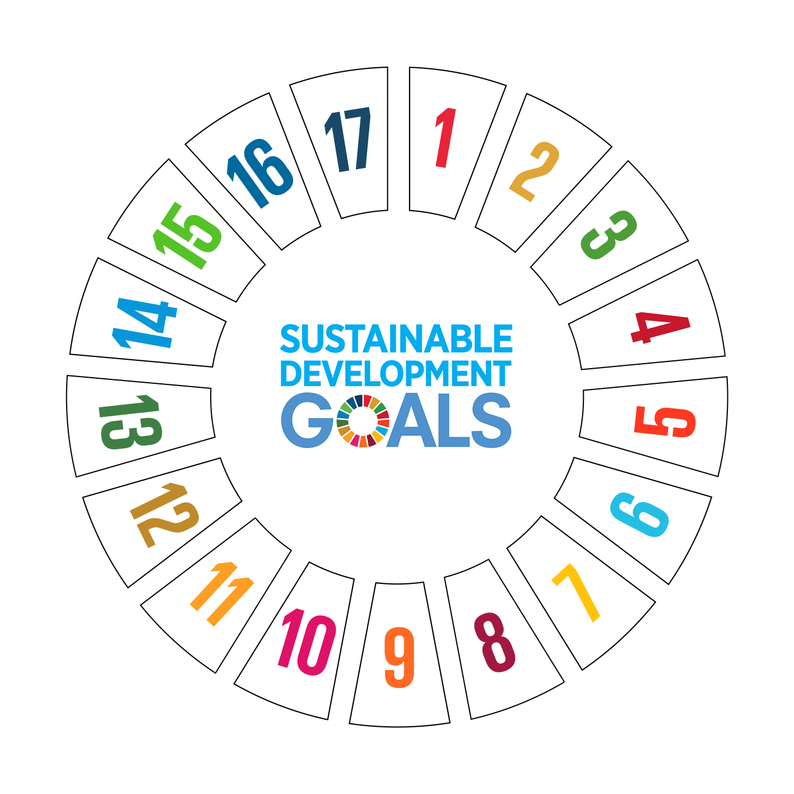
The 2030 Agenda for Sustainable Development, adopted by all United Nations Member States in 2015, provides a shared blueprint for peace and prosperity for people and the planet, now and into the future. At its heart are the 17 Sustainable Development Goals (SDGs), which are an urgent call for action by all countries - developed and developing - in a global partnership. They recognize that ending poverty and other deprivations must go hand-in-hand with strategies that improve health and education, reduce inequality, and spur economic growth – all while tackling climate change and working to preserve our oceans and forests.
The SDGs build on decades of work by countries and the UN, including the UN Department of Economic and Social Affairs
In June 1992, at the Earth Summit in Rio de Janeiro, Brazil, more than 178 countries adopted Agenda 21, a comprehensive plan of action to build a global partnership for sustainable development to improve human lives and protect the environment.
Member States unanimously adopted the Millennium Declaration at the Millennium Summit in September 2000 at UN Headquarters in New York. The Summit led to the elaboration of eight Millennium Development Goals (MDGs) to reduce extreme poverty by 2015.
MORE INFORMATION....
----------------------------------------------------------------------------------------------------------------------------------------
-----------------------------------------------------------------------------------------------------------------------------------------